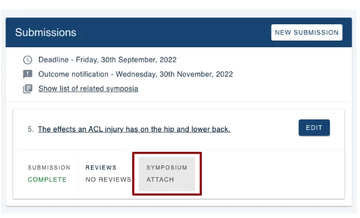
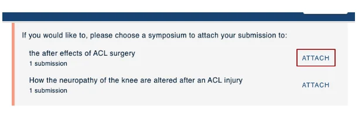
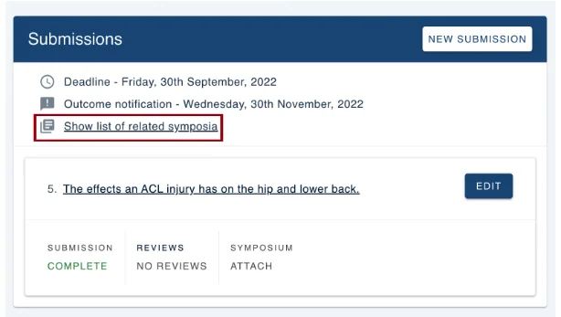
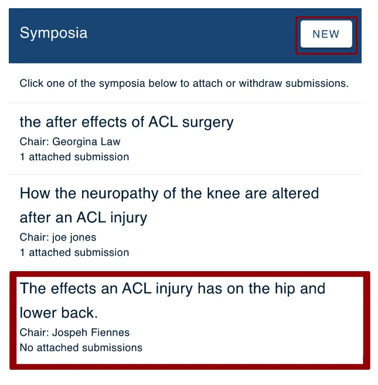
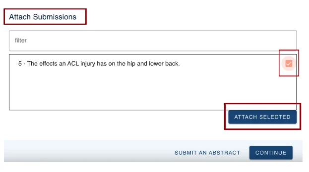
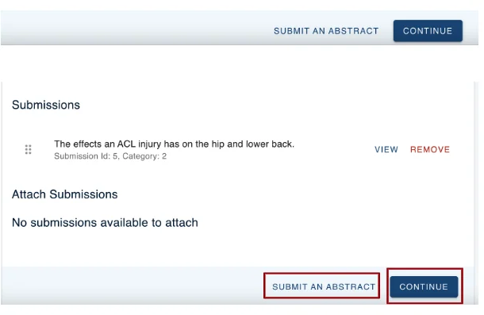

Attaching your submission to a Symposium
For people making a submissionOrganising the event?
If symposia are available for you to attach your submission to, you will see a list of available symposia after submitting your abstract and in your personal dashboard.#
You will see public symposia (available to everyone) or private symposia (you have been invited to submit to).
Skip to:
Adding a submission to a symposium
Adding a submission to a symposium via the Show list of related symposia tab
NB: Admins control who can submit to a symposium so the following option might not be available.
Attaching your submission to a symposium
When you have created your new submission and clicked Submit, the next screen will show a list of available symposia at the top of your completed submission.
Click ATTACH next to the symposium you wish to attach your submission to.

You can also attach your submission to a symposium from your dashboard after you have submitted your symposium.
From your dashboard go to the submission you are wanting to attach to a symposium and click on Symposium Attach.

This will take you to your submission form where you can attach your submission to a symposium.

You may wish to attach your submission to a symposium when viewing all symposia by clicking on Show list of related symposia in your personal dashboard.

You can then click on the title to attach your submission, or click New if you would like to submit an additional symposium.

Then scroll down to Attach Submissions and check the box next to your submission and click Attach Selected.

You will now see your submission is attached to a symposium.
Now you can either click Submit an abstract to submit an additional abstract, or click Continue to return to your dashboard.


Should you require any further assistance, please contact our support desk via our Contact Form.
Did this page solve it?
Thanks — this helps us fix it.